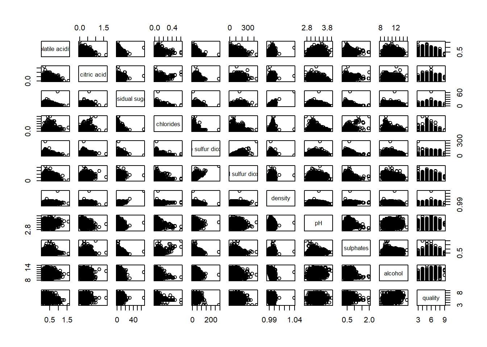
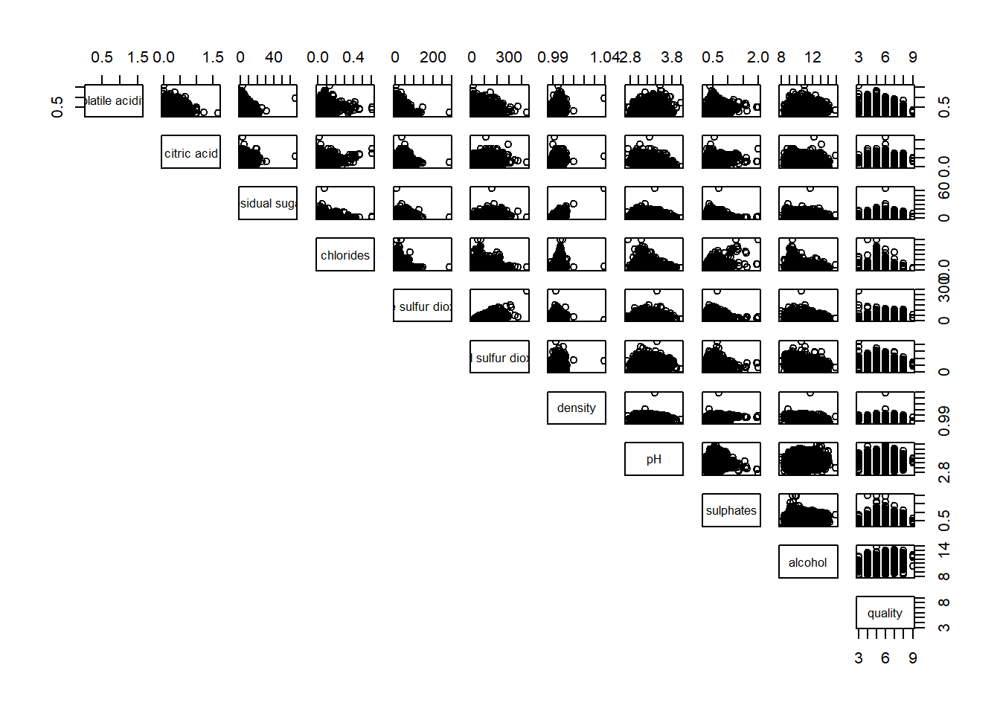
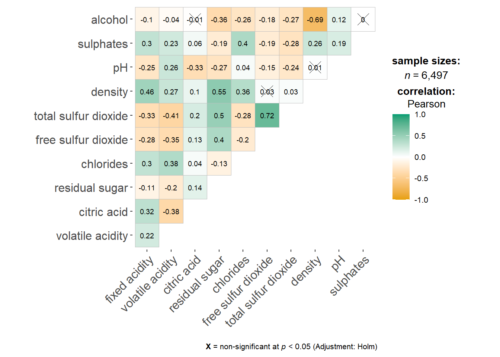
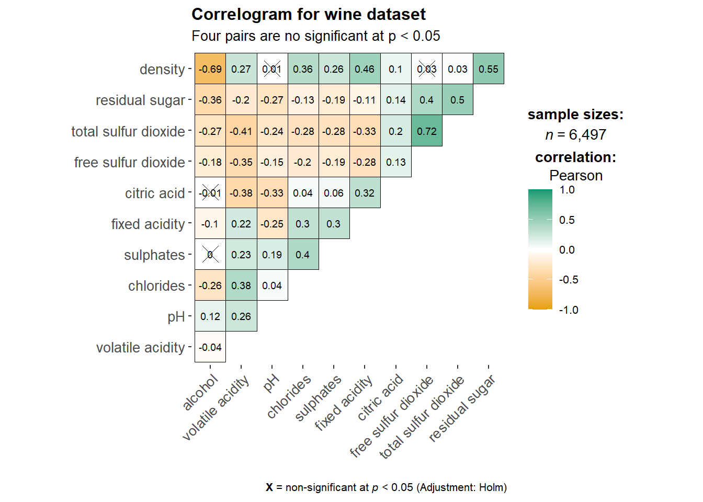

Code
pacman::p_load(corrplot, ggstatsplot, tidyverse)Correlation coefficient is a popular statistic that use to measure the type and strength of the relationship between two variables. The values of a correlation coefficient ranges between -1.0 and 1.0. A correlation coefficient of 1 shows a perfect linear relationship between the two variables, while a -1.0 shows a perfect inverse relationship between the two variables. A correlation coefficient of 0.0 shows no linear relationship between the two variables.
When multivariate data are used, the correlation coefficeints of the pair comparisons are displayed in a table form known as correlation matrix or scatterplot matrix.
There are three broad reasons for computing a correlation matrix.
To reveal the relationship between high-dimensional variables pair-wisely.
To input into other analyses. For example, people commonly use correlation matrices as inputs for exploratory factor analysis, confirmatory factor analysis, structural equation models, and linear regression when excluding missing values pairwise.
As a diagnostic when checking other analyses. For example, with linear regression a high amount of correlations suggests that the linear regression’s estimates will be unreliable.
When the data is large, both in terms of the number of observations and the number of variables, Corrgram tend to be used to visually explore and analyse the structure and the patterns of relations among variables. It is designed based on two main schemes:
Rendering the value of a correlation to depict its sign and magnitude, and
Reordering the variables in a correlation matrix so that “similar” variables are positioned adjacently, facilitating perception.
In this hands-on exercise, you will learn how to plot data visualisation for visualising correlation matrix with R. It consists of three main sections. First, you will learn how to create correlation matrix using pairs() of R Graphics. Next, you will learn how to plot corrgram using corrplot package of R. Lastly, you will learn how to create an interactive correlation matrix using plotly R.
Before you get started, you are required to open a new Quarto document. Keep the default html authoring format.
Next, you will use the code chunk below to install and launch corrplot, ggpubr, plotly and tidyverse in RStudio.
pacman::p_load(corrplot, ggstatsplot, tidyverse)In this hands-on exercise, the Wine Quality Data Set of UCI Machine Learning Repository will be used. The data set consists of 13 variables and 6497 observations. For the purpose of this exercise, we have combined the red wine and white wine data into one data file. It is called wine_quality and is in csv file format.
First, let us import the data into R by using read_csv() of readr package.
wine <- read_csv("data/wine_quality.csv")Notice that beside quality and type, the rest of the variables are numerical and continuous data type.
There are more than one way to build scatterplot matrix with R. In this section, you will learn how to create a scatterplot matrix by using the pairs function of R Graphics.
Before you continue to the next step, you should read the syntax description of pairsfunction.
The figure below shows the plot matrix of Wine Quality Data. It is a 11 by 11 matrix.
pairs(wine[,1:11])
The required input of pairs() can be a matrix or data frame. The code chunk used to create the scatterplot matrix is relatively simple. It uses the default pairs function. Columns 2 to 12 of wine dataframe is used to build the scatterplot matrix. The variables are: fixed acidity, volatile acidity, citric acid, residual sugar, chlorides, free sulfur dioxide, total sulfur dioxide, density, pH, sulphates and alcohol.
pairs(wine[,2:12])
pairs function of R Graphics provided many customisation arguments. For example, it is a common practice to show either the upper half or lower half of the correlation matrix instead of both. This is because a correlation matrix is symmetric.
To show the lower half of the correlation matrix, the upper.panel argument will be used as shown in the code chunk below.
pairs(wine[,2:12], upper.panel = NULL)
Similarly, you can display the upper half of the correlation matrix by using the code chunk below.
pairs(wine[,2:12], lower.panel = NULL)
To show the correlation coefficient of each pair of variables instead of a scatter plot, panel.cor function will be used. This will also show higher correlations in a larger font.
panel.cor <- function(x, y, digits=2, prefix="", cex.cor, ...) {
usr <- par("usr")
on.exit(par(usr))
par(usr = c(0, 1, 0, 1))
r <- abs(cor(x, y, use="complete.obs"))
txt <- format(c(r, 0.123456789), digits=digits)[1]
txt <- paste(prefix, txt, sep="")
if(missing(cex.cor)) cex.cor <- 0.8/strwidth(txt)
text(0.5, 0.5, txt, cex = cex.cor * (1 + r) / 2)
}
pairs(wine[,2:12],
upper.panel = panel.cor)
One of the major limitation of the correlation matrix is that the scatter plots appear very cluttered when the number of observations is relatively large (i.e. more than 500 observations). To over come this problem, Corrgram data visualisation technique suggested by D. J. Murdoch and E. D. Chow (1996) and Friendly, M (2002) and will be used.
The are at least three R packages provide function to plot corrgram, they are:
On top that, some R package like ggstatsplot package also provides functions for building corrgram.
In this section, you will learn how to visualising correlation matrix by using ggcorrmat() of ggstatsplot package.
One of the advantage of using ggcorrmat() over many other methods to visualise a correlation matrix is it’s ability to provide a comprehensive and yet professional statistical report as shown in the figure below.
ggstatsplot::ggcorrmat(
data = wine,
cor.vars = 1:11)
ggstatsplot::ggcorrmat(
data = wine,
cor.vars = 1:11,
ggcorrplot.args = list(outline.color = "black",
hc.order = TRUE,
tl.cex = 10),
title = "Correlogram for wine dataset",
subtitle = "Four pairs are no significant at p < 0.05"
)
Things to learn from the code chunk above:
cor.vars argument is used to compute the correlation matrix needed to build the corrgram.
ggcorrplot.args argument provide additional (mostly aesthetic) arguments that will be passed to ggcorrplot::ggcorrplot function. The list should avoid any of the following arguments since they are already internally being used: corr, method, p.mat, sig.level, ggtheme, colors, lab, pch, legend.title, digits.